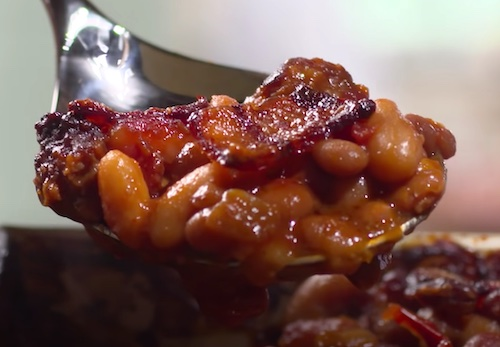

Smoked Barbeque Beans

Canned baked beans are not bad. But with a few additions and a smoker, they can be so much more.
Description
For a special side dish that serves a crowd, you can’t go wrong with barbecued beans. Instead of dealing with the fuss of soaking and simmering dried beans, we cut some corners by opting for a combination of canned baked beans, pinto beans, and cannellini beans. To enliven this trio, we combined supermarket barbecue sauce, spicy brown mustard, cider vinegar, liquid smoke, garlic, and cayenne pepper. To bump up the flavor even more, we turned to Ro-Tel Original Diced Tomatoes & Green Chilies, which also added welcome heat. A hefty amount of bratwurst stirred into the beans and slices of bacon scattered over top gave us just the meaty flavor the dish needed to be complete.
Ingredients
- ½ cup barbecue sauce
- ½ cup ketchup
- ½ cup water
- 2 tablespoons cider vinegar
- 2 tablespoons spicy brown mustard
- 1 teaspoon granulated garlic
- 1 teaspoon liquid smoke
- ¼ teaspoon cayenne pepper
- 1 ¼ pounds bratwurst, casings removed
- 2 onions, chopped
- 1 (10-ounce) can Ro-Tel Original Diced Tomatoes & Green Chilies, drained
- 2 (28-ounce) cans baked beans
- 2 (15-ounce) cans cannellini beans, drained
- 2 (15-ounce) cans pinto beans, drained
- 6 slices thick-cut bacon, cut into 1-inch pieces
Preparation
- Chop Onion
- Uncase the Brats
- Cut up bacon
- Clean your smoker's fire pot and grease trap
Instructions
- Pre-heat smoker to 350 degrees.
- Whisk barbecue sauce, ketchup, water, mustard, vinegar, liquid smoke, granulated garlic, and cayenne together in large bowl; set aside.
- Cook bratwurst in 12-inch nonstick skillet over medium-high heat, breaking up into small pieces with spoon, until fat begins to render, about 5 minutes.
- Stir in onions and cook until sausage and onions are well browned, about 15 minutes.
- Transfer bratwurst mixture to bowl with sauce. Stir in baked beans, pinto beans, cannellini beans, and tomatoes.
- Transfer bean mixture to 13 by 9-inch baking pan and place pan on rimmed baking sheet. Arrange bacon pieces in single layer over top of beans.
- Smoke until beans are bubbling and bacon is rendered, about 1½ hours. Let cool for 15 minutes. Serve.
Notes
- If you don't have a smoker, this can be made in the oven.
- Be sure to use a 13 by 9-inch metal baking pan; the volume of the beans is too great for a 13 by 9-inch ceramic baking dish, and it will overflow.
- TO MAKE AHEAD: At end of step 6, beans can be wrapped in plastic and refrigerated for up to 24 hours. Proceed with recipe from step 4, increasing baking time to 1¾ hours.